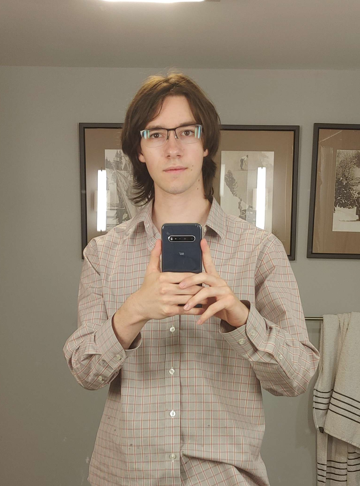

Hi, I'm Aidan Foley! I'm a computer programmer, currently studying at Stony Brook University.
My main interests are low-level application and graphics programming, though I'm enthusiastic about all kinds of projects. My main desire with computers is to make programs that are faster and easier for people to use.
Outside of programming I'm interested in graphic design, especially International Typographic Style, and art of all kinds.
Most generous souls! But please observe,
What they enjoy from birth
Is all we ever had the nerve
To ask, that is, the earth.
—James Connoly, "We Only Want the Earth"

607-882-4144 Email me LinkedIn Github